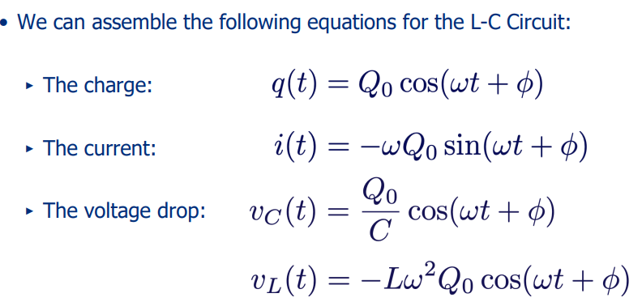

There is the A-Level equation for resistivity: \(R=\rho l/A\), and now this formula for resistivity from temperature: \[\rho(T)=\rho_0[1+\alpha(T-T_0)]\] ...where \(\rho_0\) is resistivity at reference temperature \(T_0\), and \(\alpha\) is the temperature coefficient of resistivity.
There are two fundamental laws and one not so fundamental rule when analysing any circuit:
This is “conservation of charge (per unit time)” or “conservation of current”.
Total current into junction (node) = total current out of junction (node)
This is conservation of energy. Any energy “lost” from the loads is “replaced” in the generator. For the sign convention here, consider:
Positive Volts Generated = Positive Volts DroppedI.e. \(\sum V=0\) (Around a closed loop)
With the notable exception of the ideal generator of “E.M.F.”, the voltage across conducting materials or devices will be a function of the current (and its direction). There are many useful materials for which V/I is a constant (or at least approximately so). We then say “Ohm’s Rule” is obeyed, and: \[V=IR\]
Remember from A-Level that: Resistors In Series: \[R_{tot}=R_1+R_2+R_3+\ldots\] Resistors In Parallel: \[\frac{1}{R_{tot}}=\frac{1}{R_1}+\frac{1}{R_2}+\frac{1}{R_3}+\ldots\] Furthermore, for resistors in series, voltage dropped over each will follow the rule: \[\frac{V_{out}}{V_{in}}=\frac{R_2}{R_1+R_2}\] ...where \(V_{out}\) is measured across \(R_2\).
No battery, or other source of E.M.F., is perfect since there is some loss of voltage when current is drawn. We account for this loss by saying that the source has “internal resistance” or “source resistance” \(r\) \[\varepsilon=Ir+IR_{load}\] hence... \[V_{out}=\varepsilon -Ir\]
The maximum current that an ammeter can read is called its “full scale” reading, \(I_{fs}\) We can adapt the meter to read a larger current by inserting a “shunt” resistor, \(R_{sh}\), in parallel with its internal resistance, \(R_c\) Some of the total circuit current, \(I\), now bypasses the meter coil such that \(I_{fs}=I-I_{sh}\) The existence of an internal resistance reduces the measured current: \(I=V/R_{load}\to I=V/(R_{load}+R_{meter})\). For small load resistances this can be problematic, unless we take the internal resistance into account.
The same basic meter can be used as a voltmeter, since if we know the internal resistance we can calculate \(V=IR\)
For a capacitor: \[Q=VC\] Where \(Q\) is the charge on the capacitor and \(C\) is its capacitance. You combine capacitance in the opposite way that you combine resistance. I.e. you sum the capacitances of capacitors in parallel, and take the inverse of the sum of the inverse capacitance of capacitors in series. The energy stored in a capacitor takes the form \[W=\frac{1}{2}CV^2=\frac{1}{2}QV\] This energy is stored in the electric field. For an electric field, \(E\), the energy density, \(u\), (energy per unit volume) is: \[u=\frac{1}{2}\varepsilon_0E^2\]
When charging a capacitor, the charge stored against time takes the following form: \[q=Q_0\left[1-\exp\left(\frac{-t}{RC}\right)\right]\] where \(Q_0\) is the maximum charge stored, and \(\tau=RC\). So equally: \[v_c=\varepsilon\left[1-\exp\left(\frac{-t}{RC}\right)\right]\] Whereas the charge and the voltage increase exponentially from \(t=0\), the current decays exponentially from \(I_0=\varepsilon/R\). Also note \(I=dq/dt\). When discharging a capacitor, the equations above are slightly modified: \[q=Q_0\exp\left(\frac{-t}{RC}\right)\] \[v_c=\varepsilon\exp\left(\frac{-t}{RC}\right)\]
Dielectrics - non-conducting materials between the “plates” of a capacitor can greatly enhance the capacitance.
The induced charge in the medium has the opposite polarity w.r.t. the capacitor plates. This reduces the electric field inside the capacitor. The result is an increased capacitance and a higher energy density
The dielectric constant \(K\) of a material is defined as: \[K=\frac{C}{C_0}\] where \(C\) is the capacitance of the capacitor with the dielectric present, and \(C_0\) is without.
An inductor is a circuit element that resists changes in current. A time-varying current produces a time varying magnetic field, which induces an emf according to Faraday’s Law: \[\varepsilon=-\frac{d\Phi_B}{dt}\] In addition, the emf is induced in each turn of the inductor, such that the total emf is given by \[\varepsilon=-N\frac{d\Phi_B}{dt}\] where \(N\) is the number of turns.
A current \(i\) in a coil produces a magnetic flux, according to the formula: \[N\Phi_B=Li\] where \(L\) is inductance. The self-inductance is then defined as \[L=\frac{N\Phi_B}{i}\] For a time-varying current, Faraday’s Law of electromagnetic induction gives: \[E_L=-N\frac{d\Phi_B}{dt}=-L\frac{di}{dt}\] where \(E_L\) is the "back EMF". The power to the inductor is: \[P_L=iL\frac{di}{dt}\] and the energy stored in it is: \[W=\frac{1}{2}LI^2=\frac{B^2lA}{2\mu_0}\] This is Magnetic Field Energy. Defining the magnetic energy density, \(u=U/(\textrm{Volume})\) where our volume term comes from \(lA\), we get: \[u=\frac{B^2}{2\mu_0}\]
The current will rise gradually, according to: \[i=\frac{\varepsilon}{R}\left[1-\exp\left(-\frac{R}{L}t\right)\right]\] or fall gradually, according to: \[i=\frac{\varepsilon}{R}\exp\left(-\frac{R}{L}t\right)\] with \(\tau=L/R\)
In the L-C circuit we find a qualitatively new behaviour: Oscillations. An inductor stores energy in an analogous way that a pendulum “stores” kinetic energy: \[U_L=\frac{1}{2}LI^2\] We can compare this with the energy stored by a capacitance \(C\) with charge \(Q\). This is an analogue to the “potential energy”: \[U_C=\frac{1}{2}CV^2\] The energy is transferred back and forth between the inductor and capacitor. We can apply K's voltage law to create a second order differential equation, and solve it to find the current in the L-C circuit is equal to: \[i(t)=-\omega Q_0\sin(\omega t+\phi)\] where \(\omega=\sqrt{\frac{1}{LC}}\) which is the angular frequency of the oscillations.

note: this is an undamped oscillation.
For any circuit we can solve Kirchhoff’s voltage law for any of the unknown variables in the circuit (charge, current, voltage). In this case: \[L\frac{di(t)}{dt}+i(t)R+\frac{q(t)}{C}=0\] we can re-express this and divide by \(L\) to get: \[\frac{d^2q}{dt^2}+\frac{R}{L}\frac{dq}{dt}+\frac{q}{LC}=0\] There are e 2 solutions for the case, \(R\neq0\): one for small \(R\), one for large \(R\): \[q=Ae^{-(R/2L)t}\cos(\sqrt{\frac{1}{LC}-\frac{R^2}{4L^2}}t+\phi)\qquad\qquad R^2\lt \frac{4L}{C}\] \[q=Ae^{\lambda_1t}+Be^{\lambda_2t}\qquad\qquad R^2\gt \frac{4L}{C}\]
I shall only be using complex notation here, as I believe it is vital. Furthermore \(i\) is used for varying current in electronics, so I shall use \(j=\sqrt{-1}\) Initially we should modify Ohm's rule, to the more accurate version: \[V=IZ\] where \(Z\) is impedance. Impedance is a complex property, relating resistance \(R\) and inductance \(X\), such that: \[Z=R+jX=|Z|e^{j\phi}\] All the normal properties of complex numbers apply when dealing with impedance, and when you wish to use impedance in calculations, use the magnitude of it: \(|Z|=\sqrt{ZZ^*}\) Impedances of components:
We can calculate the phase difference between components by finding each of their phase angles and comparing them. You can find the phase angle of a component from: \[\phi=\arctan{\left(\frac{X}{R}\right)}\]
We use sinusoidally varying power sources in AC circuits. \[\varepsilon=V_0\cos(\omega t)\] If we consider a simple resistive circuit, the current through it would be \[i=\frac{\varepsilon}{R}=\frac{v_R}{R}=\frac{V_r}{R}\cos(\omega t)=I\cos(\omega t)\] and the power: \[p_R=i^2R=I^2R\cos(\omega t)\]
How do we find average power \(\overline{P}\), now that \(\overline{v}=0\) and \(\overline{i}=0\)? \[\overline{P}=\overline{vi}\neq\overline{v}\cdot\overline{i}\] \[\overline{P}=RI\overline{cos^2(\omega t)}=\frac{1}{2}I^2R\] If we define root mean square current as: \[I_{RMS}=\frac{I}{\sqrt{2}}\] Hence \[\overline{P}=I^2_{RMS}R=\frac{V^2_{RMS}}{R}\]
For an arbitrary combination of capacitors, resistors and inductors, the average power is: \[P_{av}=\frac{1}{2}VI\cos\phi\] The power factor \(cos\phi=R/Z\) is ideally high. For an LRC circuit when the power factor is 1: \[\omega=\frac{1}{\sqrt{LC}}\] ...and the circuit is said to be in resonance.
When we put two loops of wire (with current flowing through them) in a line, the magnetic field of coil (1) will permeate coil (2). This is called mutual "flux linkage". \[N_2\Phi_{B2}=M_{21}i_1\] where \(M_{21}=\sqrt{L_1L_2}\) We can write: \[\varepsilon_2=-M_{21}\frac{di_1}{dt}\] where \(M_{21}=N_2\Phi_{B2}/i_1\)
The transformer allows us to transform time-varying voltages and currents, usually A.C. The flux, \(\Phi_B\) , is given by the average of the magnetic field, \(B\), times the cross sectional area of the core, or ‘yoke’. \[V_1=N_1\frac{d\Phi_B}{dt}\to\boxed{\frac{V_1}{V_2}=\frac{N_1}{N_2}}\] Typically transformers are very efficient, such that they satisfy the approximation: \[P_{in}=V_1I_1\approx V_2I2=P_{out}\] To relate the primary voltage and current to the resistance, we talk about the primary circuit “seeing” a different resistance. Resistance (and impedance) are then transformed according to: \[R'=\frac{V_1}{I_1}=R\left(\frac{N_1}{N_2}\right)^2\]